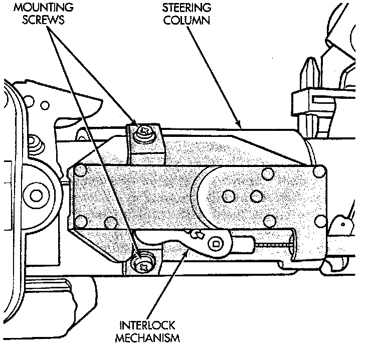

Shift Interlock: Service and Repair

REMOVAL
1. Lower the steering column.
2. Remove two screws retaining the interlock mechanism to the column. Unsnap the mechanism from column.
3. Remove the center console and related trim.
4. Disconnect and remove the cable from the shift bracket.
5. Remove the wire connector at the solenoid on the cable
6. Remove the accelerator pedal (the cable routes under the pedal).
7. Release the cable from the accelerator pedal clip.
8. Remove the carpet as necessary to remove the cable.
NOTE: The gearshift cable must be secured into position and properly adjusted before the installation of the Brake Transmission Interlock Cable (BTSI).
INSTALLATION
1. Snap the cable base assembly into the large square opening in the steering column.
2. Secure the plastic base with two (2) self tapping screws (tighten upper screw first).
3. Snap BTSI cable,solenoid tie strap into hole in steering column tube.
4. Route BTSI cable into two clips on carpet pad.
5. Snap electrical connector from brake light switch into BTSI cable solenoid housing.
6. Snap BTSI cable adjuster ears into floor shifter bracket and attach cable end fitting onto floor shifter interlock lever stud.
7. Remove shipping pin from plastic base. Then place floor shifter in Park position.
8. Place the ignition key cylinder in the ACCESSORY position.
9. Push the cable adjuster lock clamp downward to lock it.
10. Remove and discard the BTSI cable nail head lockpin at steering column.
11. Install the center console and related trim.
12. Test the BTSI cable operation.